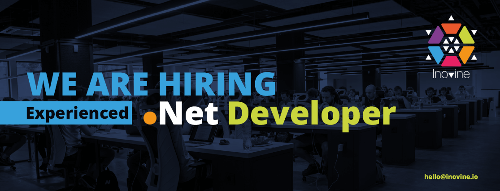

RESPONSIBILITIES
- Design, develop and support new and existing business solutions
- Participate in all steps of the software project from design to integration
- Create and maintain SQL queries, stored procedures, triggers and views
- Work in a team or individually in all phases of the software development life-cycle
REQUIRED QUALIFICATIONS
- Over 3 years of work experience in C# and principles of .NET platform
- Experience in data access technologies (ADO.NET, LINQ, Entity Framework)
- At least 5 years of experience in using web service technologies (WCF, REST, JSON)
- Work experience with SQL database design and programming
- Strong knowledge of ASP.NET MVC and Web API
- Experience in .NET Core is an advantage
- Experience in JavaScript, jQuery and AJAX
- Knowledge of Angular 2+ is an advantage
- Good English communication skills, both written and spoken
APPLICATION PROCEDURES
To apply for this position, please submit your CV to: hello@inovine.io, mentioning the position title you are applying for in the subject line of the email. Short-listed candidates will be contacted for an interview.
REMUNERATION/SALARY
Competitive, depending on previous experience and skills